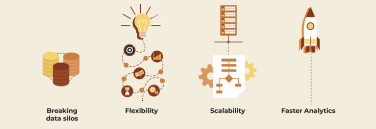

For the burgeoning volumes of data today, every enterprise needs a plan. We recommend that your plan include a data lake: Here's what, why and how to get started.
The global datasphere will grow from 33 zettabytes in 2018 to 175 by 2025, finds an IDC survey. A Forbes survey echoes this — identifies that 150 zettabytes will need analysis by 2020. Much of this data is unstructured: Social media, documents, images etc., which cannot easily be parsed and stored in traditional databases. And most of it is created in real-time. Management, governance and analysis of data at this scale needs a new approach.
Benefits of Implementing Data lake
One reliable, scalable and compliance-adaptive approach to data management is the data lake.

What is data lake?
A data lake is a large repository of data, typically stored in its natural or raw form. All structured, semi-structured, unstructured, and binary data are stored in a data lake, generally with an aim to run analytics.
Why implement a data lake?
1. Data lake helps break the silo
You wouldn't need a survey to prove that data silos is a real business problem, we'll give you one anyway—SnapLogic finds that "data silos are a problem for 98% percent of organizations." And this has real business impact. A data lake, as the singular repository for all of the organization's data, helps breaks data silos in an organization. It makes information available and accessible to everyone. It enables you to cross-analyze information from various sources for a more contextual view of the situation.
2. Data lake can adapt to your needs
A data lake is highly flexible both in terms of variety and architecture—you can store any type of data be it XML, log data, data from social streams, data from sensors/IoT, etc. Data lakes are schema-free which is essential for data to be analyzed in its raw form. This flexibility enables data aggregation across business domains and processes opening up new possibilities of analysis hitherto deemed impossible.
3. Data lakes are scalable
With inexpensive and over-the-counter storage solutions, scaling up data lakes is far easier than say a traditional data warehouse. The raw storage of data also means that there's very less upfront development time during scaleup.
4. With data lakes, you get faster analytics
Just-in-time schemas help run analytics faster on the data lake. Faster ingestion of new sources of raw data enables your business to analyze them on-demand. Data lakes also enables analytics on real-time data that is difficult in conventional big data storage solutions.
More importantly, data lakes today have plug-and-play tools available for business users to build their dashboard themselves, without relying on a development team, rapidly expediting analysis time.
While the case for data lakes is clear, it needs a bit of strategy than "let's put all the data together in a data lake". A successful data lake initiative needs many parts of the business to work together—business, governance, and IT—towards a coherent vision for leveraging data.
Making data lake work: Things to keep in mind
1. Include the business ownership
Most data lake initiatives are IT-led. Without the buy-in of the business teams, 'data' remains an IT imperative, failing to be used in the way it has potential to be. The Arcadia survey reveals "Nearly half (45 percent) of all organizations have fewer than 100 users who access their data lake". For a data lake initiative to succeed and reach its full potential, you need the ownership of the business teams.
2. Have a vision for your data
In our experience, we see many data lake initiatives being stuck in the pilot phase. This typically happens, when the data lake initiative is treated as a one-off experiment, instead of a business initiative, which has a clearly defined vision. Bring the teams together to create a vision for your data—answer the what, when, who and most importantly, why.
3. Organise your data to serve your needs
Data lakes can store any kind of data, sure, but you must understand where the data originates, the format of the data and how it is organized to use it in a business context and establish connections between data. Include data cataloguing and discovery into your data lake strategy.
4. Set up your data governance initiative
Data governance ensures that the data can be trusted, accessible and usable. It enables you to use the data in context by identifying the data source and ownership, providing definitions for the data, securing the data, mitigating compliance risks and ensuring data quality. Ensure that you have a specific, clear and future-focused data governance framework to leverage your data lake.
5. Prepare for change management
It would serve you well not to approach data lakes as an extension of the existing data warehouses. The processes to ingest and analyze data in a data lake is different from that of a conventional data warehouse.
Understand the gaps—technical skills, operational and cultural—and have an effective change management plan to derive benefits.
Like any enterprise-wide initiative, adopting a data lake requires enterprise-wide enthusiasm. To achieve this, you need more than just technological expertise. You need to set the right expectations, have a proper implementation plan and enable clear communication among the stakeholders.